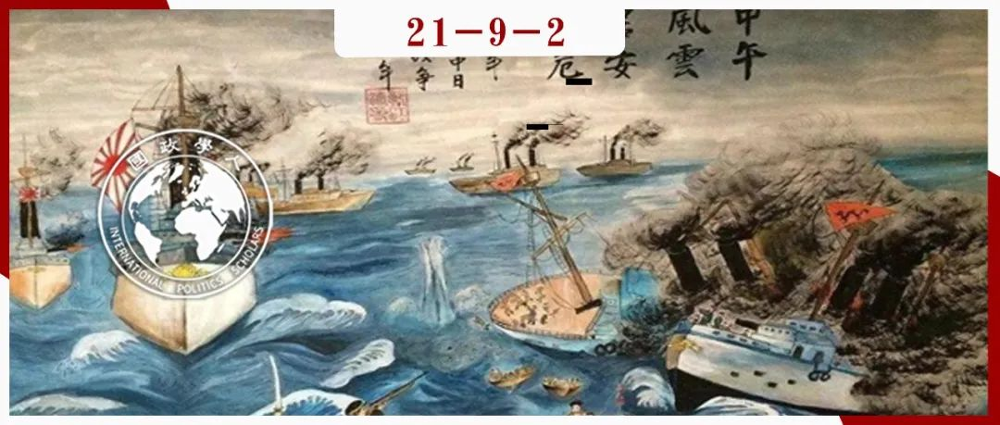

收录于合集 #理论研究 96个

作品简介
作者： Andrew Q. Greve，罗格斯大学政治学博士研究生。Jack S. Levy，罗格斯大学政治学教授，威斯康星大学麦迪逊分校政治学博士，曾任国际研究协会(ISA)第四十七任（2007-2008）主席，研究领域包括战争起因、对外政策分析、定性研究方法与政治心理学。
编译： 王川（国政学人编译员，复旦大学国际关系与公共事务学院硕士研究生）
来源： Greve, A. Q., & Levy, J. S. (2018). Power transitions, status dissatisfaction, and war: The Sino-Japanese War of 1894–1895. Security Studies , 27 (1), 148-178.
归档： 《国际关系前沿》2021年第9期，总第36期。

内容提要
权力转移理论对国际冲突研究有着诸多贡献，但学者们并未对该理论的核心变量——对现状的满意/不满（satisfaction/dissatisfaction）进行充分的操作化。本文认为，地位不满是崛起国对现有体系不满的核心组成部分。在阐明地位概念及其与权力转移、政治能力、权力对等等其他权力转移变量的因果相互作用后，本文将修正的权力转移框架应用于1894-1895年的甲午中日战争。甲午战争是一个具有理论启发与历史重要性的案例，但很大程度上为国际关系学者所忽视。清朝控制朝鲜带来的经济与安全威胁、日本对自身在清朝主导的东亚等级体系中的地位不满、寻求西方国家的地位承认、同地位相关的国内压力和内生于权力转移的信念变迁是日本修正主义对外政策的驱动因素。通过验证对不满的测量，并以过程追踪评估其因果影响，历史案例研究能够补充大样本分析，增进对权力转移的理解。
文章导读
01
权力转移理论
（一）理论概述
**
**
权力转移理论认为，对既有国际秩序不满的崛起国一旦有能力推翻既有秩序，就有动机付诸实践。当一个不满的崛起挑战国的力量接近体系中主导国的力量时，大规模战争爆发的可能性随之达到顶峰。在操作上，这种现象出现在崛起国与主导国实现“权力对等”之后，而就“权力对等”一词，权力转移理论学者对此界定为崛起国具有相对于主导国实力80%的状态。不满的挑战国会发动战争，以便利用其权力重建体系，建立一套新的规则，并使其从体系中获得的利益与增加的权力相符。尽管权力转移的大多数分析都集中在权力上，但对现状的满意程度是该理论的核心构成部分。崛起国不愿接受从属地位，不满于现有制度规则，想要取代占主导地位的国家，重新建立规则体系，并创造一个新秩序。学者们构建了各种可操作化的指标来衡量不满程度，但很少有指标能充分弥合对应得利益的感知与所得利益之间的差距。
（二）整合地位不满
**
**
奥根斯基(A. F. Kenneth Organski)强调国家不愿接受体系中的“从属地位”，这在原则上有助于将地位关切整合进理论中，而“不满”的概念是指所得利益与认为应得利益之间的不平衡。然而，奥根斯基等学者在权力转移的后续研究中并未发展这一点。学者们通常认为，权力对等与崛起国对体系中所获物质利益的不满催生了权力转移与战争之间的联系。本文认为，国家可能不满于无形的地位关切以及物质资源的分配。尽管地位关切的重要性因案例而异，但它是不满情绪的另一重要组成部分。
作为不满的来源与国家间冲突的原因，学者们对地位关切的兴趣在过去几年激增。蒲晓宇和施韦勒(Randall Schweller)认为，地位通常是（崛起大国）对现有秩序不满的首要因素。一些学者认为，地位不满与不被尊重是最为重要的战争起因。史蒂芬·沃德(Steven Ward)强调，地位不可流动性(status immobility)的观念会通过其国内政治导致冲突。大多数关于崛起国与地位的研究都不在权力转移的框架内，本文则明确地将地位不满整合进权力转移理论中。
地位不满是指行为体认为根据自己的属性应获得的地位与其他行为体实际授予的地位之间的落差。 要想知道行为体何时对自身地位不满，需要知道行为体如何感知自己的“合法地位”，以及该地位是否得到了相关行为体的承认。地位包括内在维度与工具性维度，既被视为目的本身（包括其在心理层面的价值），也被视为获得国际影响力、经济利益、国内政治支持与实现意识形态目标的手段。但是，当领导人谈及地位与威望的重要性时，我们却并不总是十分清楚他们的思考是内在的还是工具性的。
就与地位相关的方法论问题而言，识别地位动机并相对于其他动机评估其价值并非易事，即使在单一的历史案例研究中也是如此。本文强调行为体的感知而非行动，因为同样的行动可能反映出极为不同的动机。政治领导人的言论具有揭示性，尤其是当相似的言论构成了一种持久模式，并以私人声明的形式出现时。在对日本的案例研究中，本文也主要依据日本领导人的声明。
（三）国内政治
地位不满可能是一个重要的国内因素。如果民族主义的公众认为在特定问题上与敌国妥协是一种国耻，会损害国家的地位排名，以及如果领导人为避免失去国内政治支持而采取强硬立场，那么 地位不满通过与国内政治的相互作用扮演着重要角色。
**
**
奥根斯基最初提出的权力转移理论包含两个重要的国内变量：工业化与政治能力。吉尔平(Robert Gilpin)的霸权转移理论也包含了类似的逻辑，强调不同的增长率是体系“最不稳定的因素”。然而，吉尔平的观点超越了奥根斯基，提出其他的国内政治联系。他强调精英偏好、竞争性国内联盟之间权力分配的转移及其对国家外部行为的影响。吉尔平进一步指出，国内变化会影响领导人追求对外政策目标的政治能力。此外，对奥根斯基权力转移理论的一些定量检验只关注对权力的衡量，而未致力于将不满或政治能力直接纳入分析中。
02
1894-1895年甲午中日战争
对甲午战争起因的解释强调日本在朝鲜的战略与经济利益、寻求西方大国的认可与获得地位、日本文化优于朝鲜的信念与国内政治压力。某些解释与修正后的权力转移理论对战争的解释相一致，这实际上有助于丰富该理论。在回顾这些替代性解释后， 作者扩展了权力转移理论，将地位不满与同权力转移、政治能力等变量相互作用的某些国内政治变量纳入该理论。
在权力转移方面 ， 清朝与日本对工业化与全球变革的不同反应导致两国在1894年战争爆发前的几十年内在经济增长、政治能力与军事改革等方面的实力差距不断缩小。日本逐步实现与清朝的权力对等是日本作出战争决定的必要条件，这证实了权力转移理论的一个关键假设。 就地位不满而言， 日本领导人充斥着对国家地位的关切，既是因为其在确保物质利益与国内支持方面的工具性价值，也是因为其内在价值。随着权力转移逐渐有利于日本，与中国开战最终成为缓解日本对现状不满的可行策略。 在国内政治方面， 日本国内的两个主要派系都有一个共同目标，即提高日本在东亚与全球体系中的地位，但他们在战略方式上存在分歧——其地位目标是通过外交手段实现，还是通过武力征服朝鲜并着手构建帝国。这一分歧一直持续到19世纪90年代初。19世纪80、90年代，随着在朝鲜问题上遭遇失败，以及通过外交努力修改同西方国家的不平等条约并获得相关承认受挫，加之军事现代化建设使得日本实力提升，改革派也逐渐转变了其立场与信念，两派成员对战争有利结果的看法趋于一致。信念变化与国内争论的解决是内生于权力转移的，由此与权力转移理论保持一致。此外，日本军方一贯主张在朝鲜问题上采取强硬路线。日本军方独立权威的增长是导致战争的重要内部政治因素，但经常被忽视。与日本文职领导人一样，军方也急于在西方世界中确立本国的国家地位。霸权主义与对朝鲜负有神圣军事使命的思想将军方领导人的个人不满与对荣誉的追求同国家的战争行为相联系。在最终升级为战争的过程中，军方发挥了关键作用。
03
权力转移、地位与战争
本文认为，相比于权力政治、经济利益、国内政治抑或单纯的地位观点等替代性解释，通过纳入地位不满，修正后的权力转移理论为解释1894年甲午战争的爆发提供了更为合理有力的解释。本文将地位关切作为对现状的不满来源纳入到权力转移理论中，从而扩展了该理论。政治领导人寻求地位，既作为获取国家战略与经济利益以及自身国内政治利益的手段，也是以其本身的心理价值为目的。地位的工具性维度与权力转移理论的物质主义和理性主义“核心”完全一致，而地位的内在维度则超越了该核心。本文也拓宽了权力转移理论的权力概念，以军事权力要素补充了其对经济权力的关注。本研究也发现了一些值得探讨的理论主张，例如不满与崛起国之间的“相互促进”关系(reciprocal relationship)。如果地位没有随着实力增强而提高，崛起国的不满情绪可能会增长。同时，不满情绪会促使国家通过经济和军事现代化等政策，以及提高为国家目的动员社会资源的政治能力来增加权力。地位不满是崛起国家的一个重要驱动因素。然而，不满情绪有许多方面，因此我们不能断言地位是所有权力转移中不满情绪的首要决定因素。地位与其他不满来源的相对因果权重是后续研究的一个重要问题。
译者评述
本文反思了权力转移理论，指出既有理论在操作化该理论的核心变量——对现状的不满上存在不足。作者认为崛起国对地位的不满是补充权力转移理论的关键要素，权力转移、地位不满及产生的国内政治压力是导致崛起国采取修正主义行为、发动战争的重要原因。作者将修正后的权力转移框架应用于甲午中日战争，对战争的起因进行了详细的过程追踪与单一历史案例分析，进而检验了作者的核心观点。在研究问题选取上，作者敏锐地看到了既有权力转移理论的不足，试图对既有的理论框架进行修正。在理论建构上，作者将体系/地区层面的权力转移现象与国内政治层面的精英分歧、政治能力与地位预期等变量进行了整合，并以此解释了日本的战争政策选择。在研究方法上，虽然以单一案例的过程追踪方法进行实证检验的观点在普遍性和一般性方面相对有限，但通过对日本案例的深度细致剖析能够找出具体的因果关系并细致考察其因果机制，理解权力转移与战争爆发之间的中间过程。当然，本文的研究也带来了一些有待进一步分析的问题。例如，如何具体衡量国家的地位不满；在权力转移过程中主导国或霸权国是否也存在地位不满抑或地位焦虑，这会对其对外政策产生怎样影响；如何区分国家的地位不满与权力不满等其他不满情绪来源。
词汇整理
large-N studies 大样本研究
责编 | 赖永祯 陈勇
排版 | 胡蝶 刘吉文
文章观点不代表本平台观点，本平台评译分享的文章均出于专业学习之用, 不以任何盈利为目的，内容主要呈现对原文的介绍，原文内容请通过各高校购买的数据库自行下载。

国政学人
支持学术公益与知识传播
微信扫一扫赞赏作者 __赞赏
已喜欢，对作者说句悄悄话
取消 __
发送给作者
发送
最多40字，当前共字
上一页 1/3 下一页
长按二维码向我转账
支持学术公益与知识传播
受苹果公司新规定影响，微信 iOS 版的赞赏功能被关闭，可通过二维码转账支持公众号。